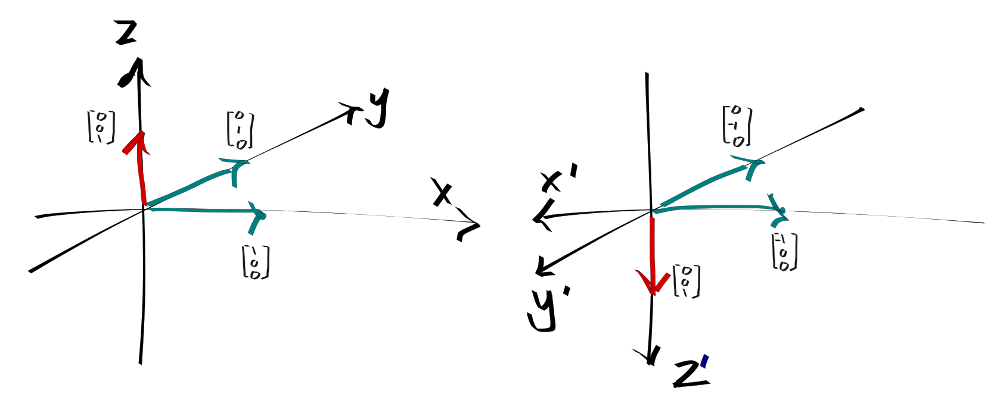

Axial and polar vectors
A polar vector transforms as $\mathbf{r} \rightarrow -\mathbf{r}$ under a spatial inversion. That is, if we reversed the directions of all the axes in our coordinate system then the numerical description of the same vector will pick up a negative sign as compared to the old coordinate system.
On the other hand, an axial vector transforms as $\mathbf{L} \rightarrow \mathbf{L}$. This seems rather strange, as it means that the physical direction of the vector has been reversed!
A classic example of an axial vector is the cross product of two polar vectors. Consider the polar vectors $\mathbf{A} = (1, 0, 0)$ and $\mathbf{B} = (0, 1, 0)$. Their cross product in the original (unprimed) coordinate system is: $$ \mathbf{A} \times \mathbf{B} = \begin{bmatrix} 1 \\ 0 \\ 0 \end{bmatrix} \times \begin{bmatrix} 0 \\ 1 \\ 0 \end{bmatrix} = \begin{bmatrix} 0 \\ 0 \\ 1 \end{bmatrix} $$ Now, suppose we perform a spatial inversion which moves us to the primed coordinate system. In this coordinate system the vectors are now $\mathbf{A}' = (-1, 0, 0)$ and $\mathbf{B}' = (0, -1, 0)$. Even though the numbers are different these are still the same physical vectors. Now consider their cross product: $$ \mathbf{A}' \times \mathbf{B}' = \begin{bmatrix} -1 \\ 0 \\ 0 \end{bmatrix} \times \begin{bmatrix} 0 \\ -1 \\ 0 \end{bmatrix} = \begin{bmatrix} 0 \\ 0 \\ 1 \end{bmatrix} $$

We see that the numerical value of their cross product is the same as before, but because the $z$ axis now points down rather than up the physical vector associated with it has been reversed! Note that the procedure by which we compute the cross product is the same in both coordinate systems. A common, although in my opinion somewhat handwavy justification of this result is the following. In the original coordinate system, right hand rule tells us that the cross product of $\mathbf{A}$ and $\mathbf{B}$ points up. When we perform spatial inversion, our right hand is inverted along with the coordinate system. Therefore in the primed coordinate system the rule for taking cross products is now the left hand rule, and since the physical vectors associated with $\mathbf{A}'$ and $\mathbf{B}'$ have not changed their cross product now points in the opposite direction.
How does this creep into Physics? Consider the magnetic field $\mathbf{B}$. The Biot Savart law tells us that $\mathbf{B}$ is the cross product of two polar vectors, current density $\mathbf{j}$ and displacement $\mathbf{r}$.
Now suppose we wrote down some physical law involving $\mathbf{B}$. For example, we might postulate (wrongly) that the force on a charged particle was of the form: $$\mathbf{F}_B = q\mathbf{B}$$ We also enforce that the law takes the same form in the primed coordinate system, so: $$\mathbf{F}_B' = q\mathbf{B}'$$ Then because $\mathbf{B}$ and $\mathbf{B}'$ point in opposite directions (by their axial nature) we find that the physical vectors corresponding to $\mathbf{F}_B$ and $\mathbf{F}_B'$ in the unprimed and primed coordinates also point in opposite directions, which by Newton's second law will give two different physical predictions about the trajectory of the particle. This is contradictory and means that either the law is wrong, or that the law takes a different form depending on our choice of coordinate systems, which is unsatisfactory. The resolution in electromagnetism is to throw in another cross product. That is: $$\mathbf{F}_B = q\mathbf{v}\times\mathbf{B}$$ The axial nature of the cross product and the axial nature of $\mathbf{B}$ cancel so that the resulting vector is polar - which must be for the case of a force.